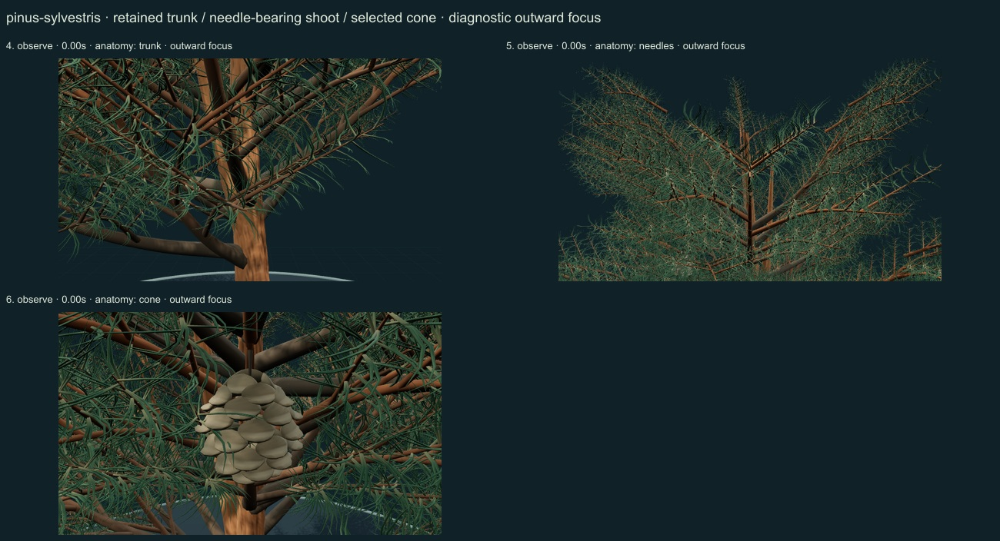
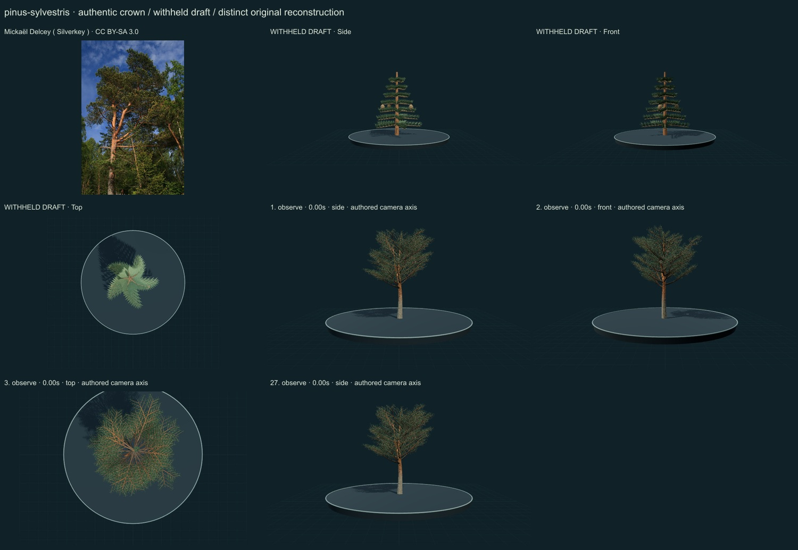
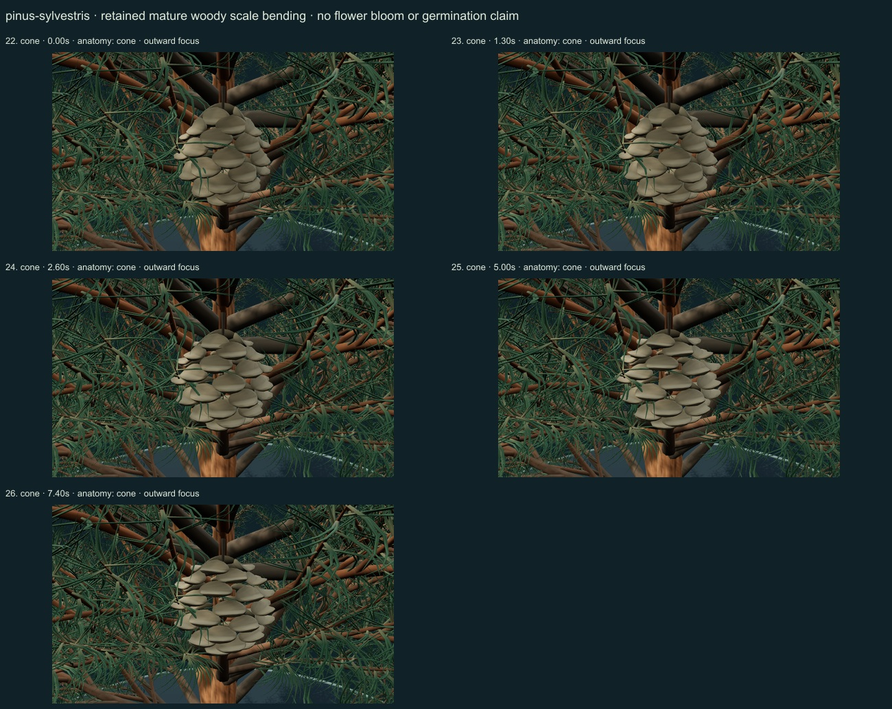
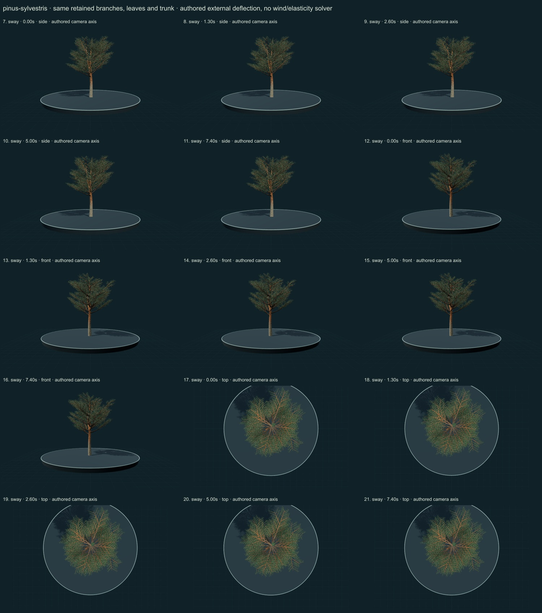

PhenoVoxel Archive · v0.6.23 · October 25, 2026
Scots pine
274 records after verified publication. 26 saved drafts remain held; 276 remain to 550, including 250 without a saved draft. Release register.
Selected actual institutional description and its leaf, cone and bark photographs viewed. Paired twisted needles, sheath region, selected woody cone/apophysis, grey fissured lower bark and orange upper bark inform qualitative morphology. Private additional copyrighted reference images were consulted and linked, not redistributed or sampled into textures. Planted hardiness maps are not native-range evidence. Selected actual primary PDFpages1–3 read; page2 Figure1d graph and page3 selected Methods reviewed. One extant P.sylvestris scale was compared with fossil conifer scales. Whole-cone/scale photographs in Figure1a–c show fossil taxa and are not treated as photographs of this living species. No experimental mass, angles, timing or material constants are fitted. The model offers qualitative bending only.
Mickaël Delcey ( Silverkey ) · CC BY-SA 3.0. Source-labelled real organism reference; preparation, life-stage, location and selected phenotype do not establish all species variation or measured 3D anatomy. Resized inside 1000 px, flattened and JPEG encoded; no generative alteration.
Exact creator, license, source/download/local checksums and access scopes remain in the data. Additional copyrighted institutional photographs and primary figures were consulted privately and linked, not redistributed or sampled into materials.
Original irregular crown, continuous tapered trunk and branched woody axes with individually modeled paired needle cues and selected pendent woody seed cones; foliage and cone details can be inspected through anatomy cards.
Original continuous fissured grey-brown lower bark, warmer upper bark, blue-green paired needle surfaces and muted woody cone-scale pigmentation; no photographic pixels or measured tissue reflectance.
Remaining: The selected crown is still more open and regular than many mature individuals. Needle density, bark relief, fine scale construction and natural optical response remain simplified; no measured proportions, age, environmental response or complete seedling development.
The same trunk, branches, leaves and cones remain present. Working sway is small authored external branch deflection with anchored roots; no wind, stiffness, damping or physiological solver. Selected mature woody scale surfaces additionally bend during a monotonic authored study, without measured humidity, force or timing. Full germination and organ-by-organ seed-to-tree development remain unavailable; the adult crown is not resized into a false developmental sequence.
Partly stylized original educational reconstructions. Fine morphology, age variation, tissue optics, dimensions and environmental mechanics remain incomplete or unmeasured. No independent specialist validation, scientific certification or accuracy percentage. Software checks and screenshots do not establish biological validity.
27 actual nonblank final viewer states inspected on 4 labelled sheets. Side/front/top are authored whole-crown camera axes; outward focus is a separate diagnostic view. Qualitative author review, not independent scientific certification.




Partly stylized original educational reconstructions. Fine morphology, age variation, tissue optics, dimensions and environmental mechanics remain incomplete or unmeasured. No independent specialist validation, scientific certification or accuracy percentage. Software checks and screenshots do not establish biological validity. Prior 270 species objects and original wolf/tiger meshes unchanged. Occurrences and cultivated accessions are not native-range boundaries. Legacy Protista/Monera are reporting conveniences.
Exact findings, sources and screenshot hashes